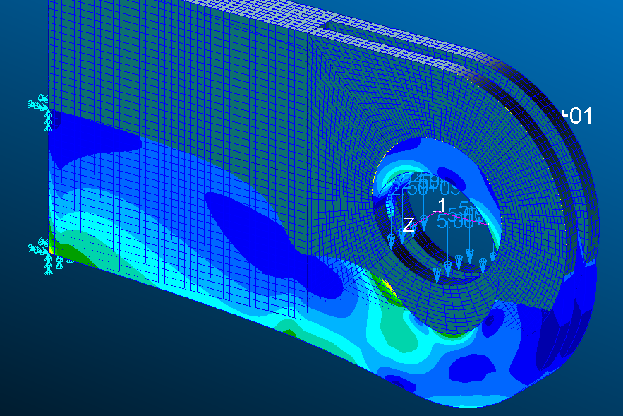
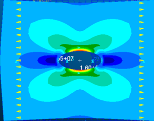
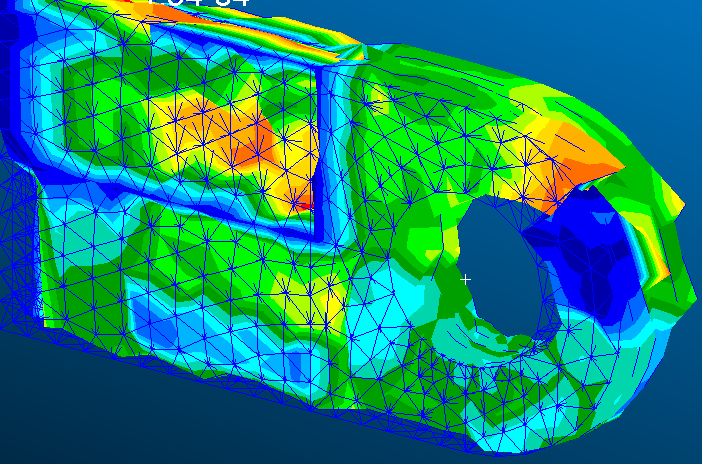

Finite element modelling
Building a complete model in Patran: geometry, properties, loads, boundary conditions, then solving with Nastran.
SH. 04 · LAB SERIES · 4TH YEAR · 2026
Four labs to master the finite element method, from a 1D beam to a 3D part, through to thermal analysis. Always with the same rule: validate the numerical result against an analytical calculation.

01 · THE TOPIC
Each lab tackles a different type of modelling, with increasingly complex structures. Each time, the finite element model is built from scratch: geometry, mesh, material, loads and boundary conditions.
The numerical results are then systematically compared with analytical calculations or a reference model, to understand where discrepancies come from and judge how reliable the model is.
02 · THE LABS
Linear static analysis of a hollow beam: tension, bending, self-weight and the superposition principle.
Stress concentration around a hole, influence of mesh refinement and modelling using symmetry.
Comparison of four types of solid elements (Hex8, Hex20, Tet4, Tet10) against a very fine reference model.
Thermal expansion of a cylinder, then conduction and convection through multilayer walls, in 1D and 3D.
03 · IN PICTURES


04 · SKILLS GAINED
Building a complete model in Patran: geometry, properties, loads, boundary conditions, then solving with Nastran.
Choosing between 1D, 2D and 3D elements, linear or quadratic, knowing their strengths and limits.
Refining where gradients are steep and checking that the solution no longer depends on the mesh.
Comparing every result with strength of materials or theory, and explaining where discrepancies come from.
Using symmetry and simplifying a model (3D to 1D) to reduce cost without losing accuracy.
Modelling conduction, convection and thermally induced stresses in a structure.
05 · SOFTWARE USED
06 · CONCLUSION
These labs gave me solid foundations in finite element structural analysis, and above all a reflex: never trust a numerical result without checking it.
They also taught me to find the right balance between accuracy and computational cost, by choosing the element type, mesh density and modelling level suited to each problem.